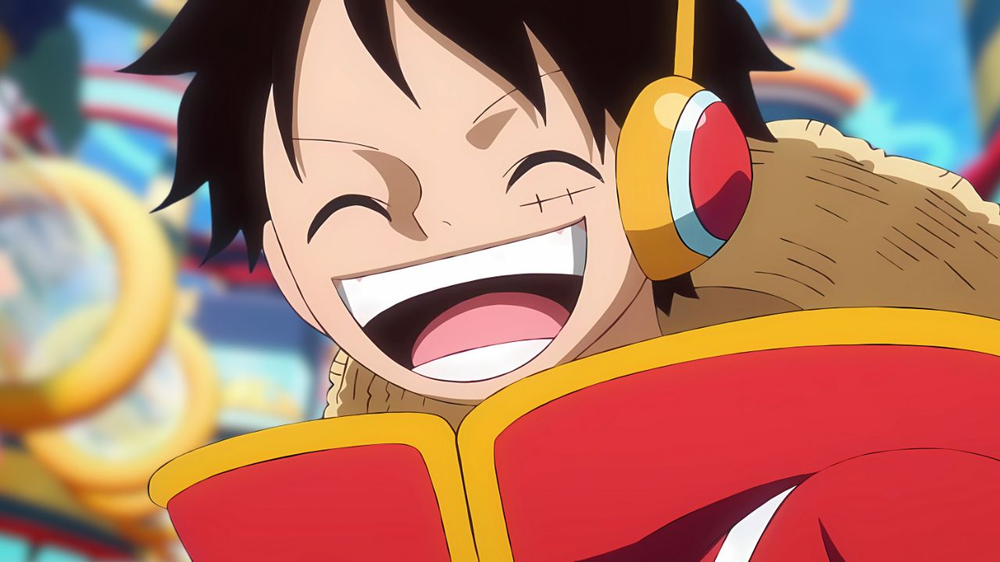
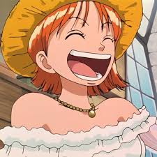

Personagens Masculinos e Femininos de One Piece
10 - Personagem de One Piece Masculinos:
- Monkey D. Luffy - Determinado e nunca desiste do seu sonho de se tornar o Rei dos Piratas.
- Roronoa Zoro - Extremamente leal e mestre no estilo de três espadas.
- Sanji - Cavalheiro e excelente cozinheiro, especialista em chutes poderosos.
- Trafalgar D. Water Law - Estratégico e usuário da Ope Ope no Mi.
- Dracule Mihawk - O maior espadachim do mundo.
- Portgas D. Ace - Corajoso e usuário dos poderes do fogo.
- Shanks - Carismático e extremamente poderoso com o Haki.
- Usopp - Criativo e excelente atirador, apesar de medroso.
- Marshall D. Teach (Barba Negra) - Ambicioso e manipulador, usuário de duas Akuma no Mi.
- Sabo - Inteligente e braço direito do Exército Revolucionário.
O personagem mais famoso Masculino: Monkey D. Luffy

10 - Personagem de One Piece Femininos:
- Nami - Inteligente e excelente navegadora, com habilidades de previsão.
- Nico Robin - Muito culta e calma, arqueóloga que busca o verdadeiro século perdido.
- Boa Hancock - Extremamente orgulhosa e considerada a mulher mais bonita do mundo.
- Vinsmoke Reiju - Fria e estratégica, possui poderes baseados em veneno.
- Charlotte Linlin (Big Mom) - Uma das Yonkou, muito poderosa e imprevisível.
- Yamato - Determinada e admiradora de Kozuki Oden.
- Shirahoshi - Princesa sereia com o poder de controlar os Reis dos Mares.
- Tashigi - Determinada e apaixonada por espadas lendárias.
- Perona - Sarcástica e usuária dos poderes dos fantasmas.
- Jewelry Bonney - Misteriosa e capaz de alterar a própria idade.
A personagem mais famosa Feminino: Nami
